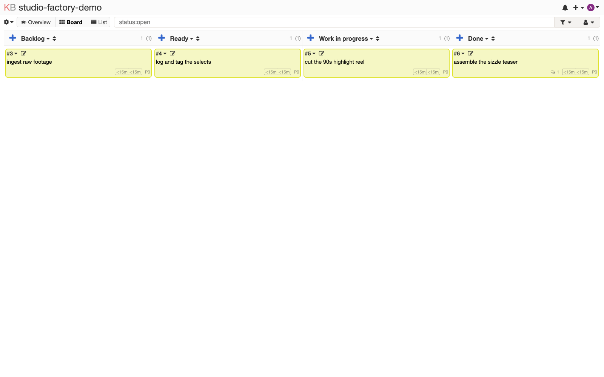

Studio Box · rig
Kanban Factory
A real Kanban board — open-source Kanboard (MIT) — running in one small container on your box, with the agent seats that drive it. An agent pulls a ticket, moves it across the columns, records the work, and closes it — all over the board's own API, terminal-in / terminal-out as the interface.
This page is a launcher/explainer, not the board. The live surface is Kanboard's own
authenticated UI, served by the board container once the rig boots — by default at
http://127.0.0.1:8791 on your box. Boot the rig, then open Kanboard's own UI and sign in
there. Nothing on this page is a working board; it renders no live board and holds no credentials.
Boot
docker compose -f docker-compose.yaml up -d # boots the Kanboard container (loopback, health-gated) # then open the board's own UI at its local URL and sign in there
The lifecycle your agent drives
- create — file a ticket on the board
- pick up — the driving agent records an explicit pickup on the ticket
- move — across Backlog → Ready → In progress → Done (columns resolved dynamically)
- work — one bounded step, recorded on the ticket
- work complete — the card lands visibly, open in the Done column
- terminal closure —
closeTaskafter it is in Done (a greyed closed card alone is not "work done" — the two states are distinct)
What's in the folder
rig.yaml— the rig: the docker'd board as a managed service + two seats (orchestrator, board-driver)docker-compose.yaml— one Kanboard container, SQLite, loopback-only, digest-pinnedglue/kb.sh— a ~20-line JSON-RPC wrapper (terminal-in/out as the API; dynamic IDs; token from a 0600 env-file, never printed)agents/— the orchestrator and board-driver seat guidanceRUNBOOK.md— boot, token bootstrap, drive, teardown
Agent-facing verbs (JSON-RPC over one POST endpoint /jsonrpc.php)
createTask— file a ticketgetColumns— resolve the board's columns dynamicallymoveTaskPosition— move a card into a named columncreateComment— record pickup and the work step on the ticketgetTask— read a card's column and open/closed statecloseTask— terminal closure after Done
What it looks like
